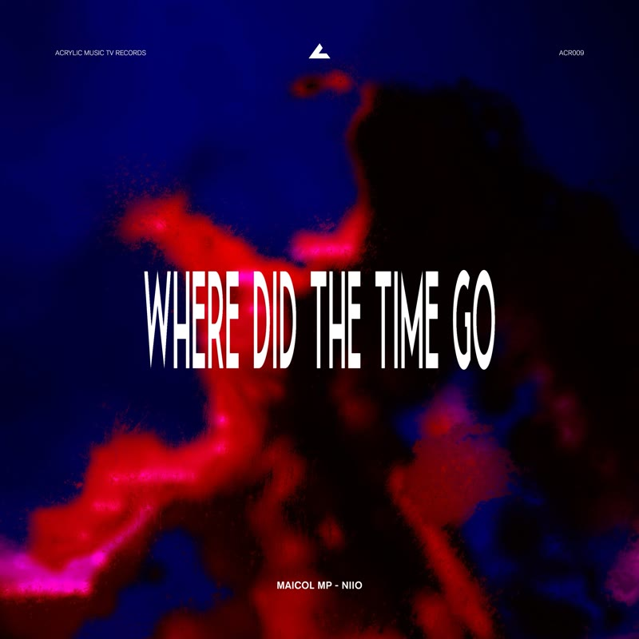
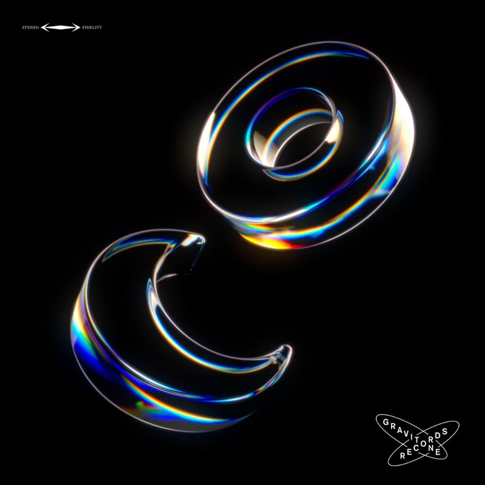
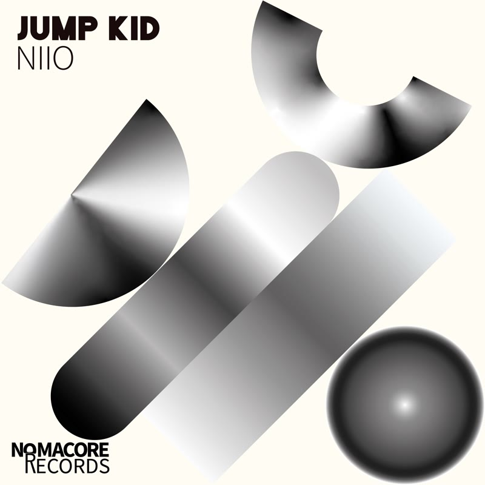
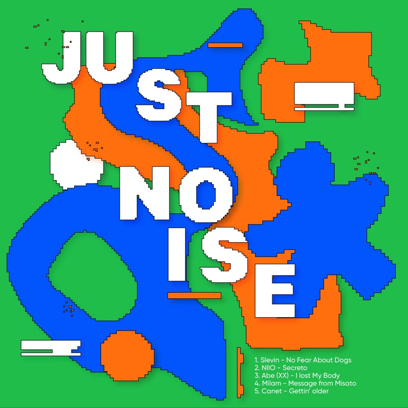
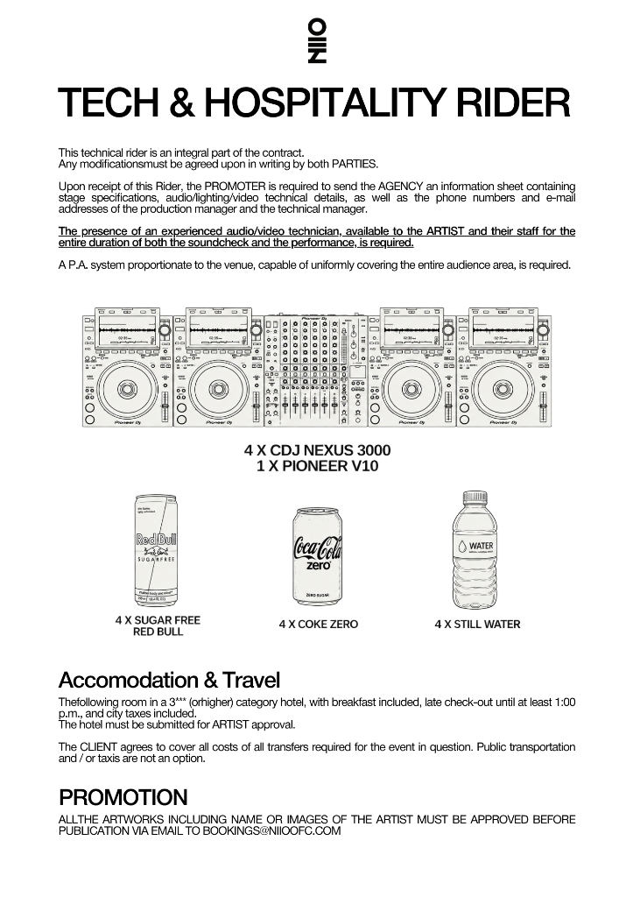

NIIO, Maicol MP - Where Did The Time Go
Singolo ▪ NIIO,Maicol MP ▪ 2026
Listen hereOver the years, NIIO has built his presence across the electronic music scene of his hometown, Florence, performing in some of the city’s most renowned clubs.
In 2021, he moved to Milan, opening a new chapter in his artistic journey and performing at venues such as The Sanctuary, Apophis, Spazio Diaz, Apollo, and many more. His sound has also reached international dancefloors, with appearances at Traffic and Red Bar in Tokyo, the iconic Macarena Club in Barcelona, and Bret in Amsterdam.
Blending house and techno with deep, melodic and ambient influences, NIIO creates a sound driven by atmosphere, progression and emotion. Both through his sets and productions, he builds immersive sonic experiences that move between hypnotic rhythms and evolving textures, taking listeners on a journey beyond the ordinary.

Singolo ▪ NIIO,Maicol MP ▪ 2026
Listen here
Album ▪ NIIO,Bittoo Pirazzi ▪ 2026
Listen here
Singolo ▪ NIIO ▪ 2025
Listen here
Singolo ▪ NIIO ▪ 2025
Listen here